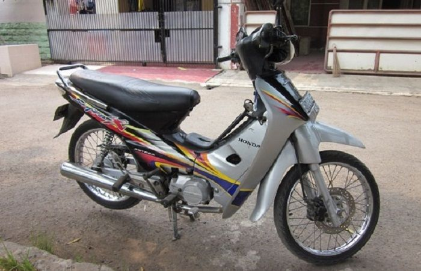
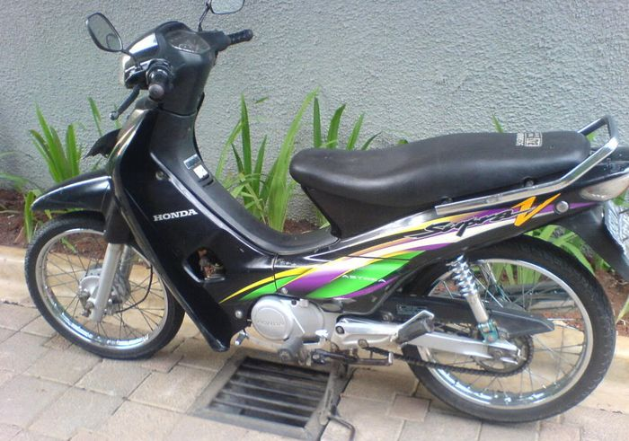
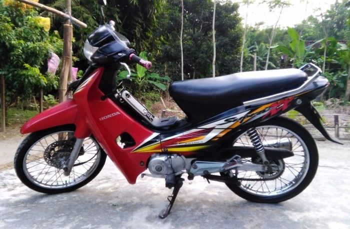
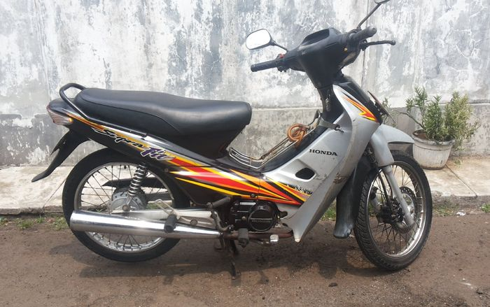

Dunia Supra
Semua Tentang Supra Ada Disini
Selamat Datang
adalah seri sepeda motor yang diproduksi oleh Honda sejak tahun 1997 untuk pasar Asia. Nama Supra hanya digunakan untuk Indonesia, sedangkan di negara Asia lain motor ini dikenal sebagai Honda Wave (wilayah ASEAN), Honda Dream (Jepang, China dan Korea), atau Honda Future (India dan Asia Selatan).
Sepeda motor bertipe bebek ini memiliki sejarah cukup panjang, motor rakitan PT Astra Honda Motor (AHM) ini melegenda menjadi salah satu motor yang paling laris di Indonesia dari tahun ke tahun. Sejak awal kemunculannya pada tahun 1997 dengan mengusung nama Supra, motor ini adalah untuk menggantikan model sebelumnya, Astrea Grand dan Legenda, meskipun keduanya tetap diproduksi sebagai produk entry level hingga tahun 2002, dibawah kelas Supra.



